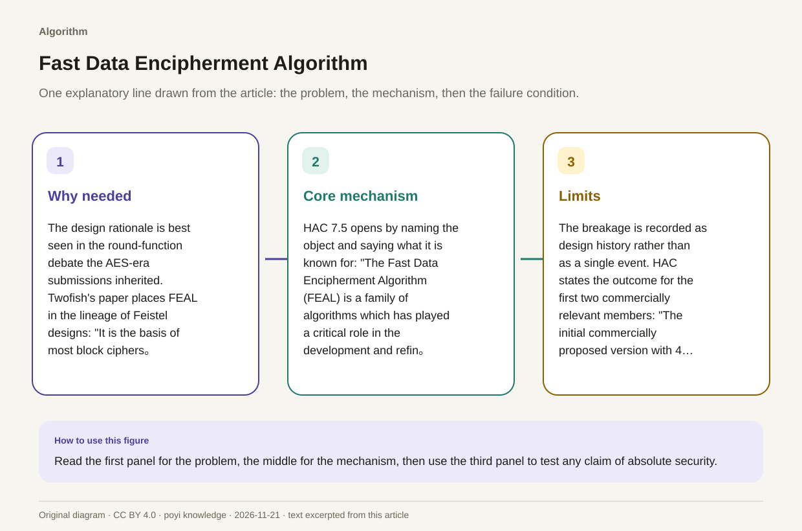
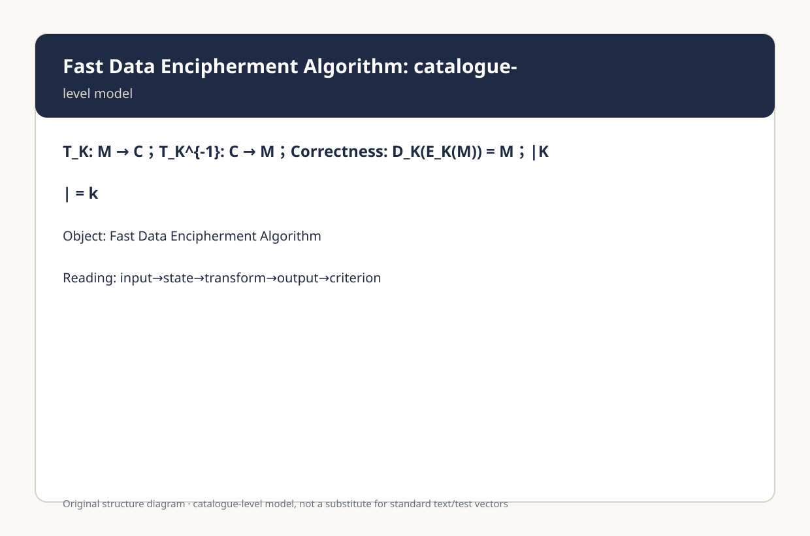

Principles
Algorithm: Fast Data Encipherment Algorithm (FEAL 分组密码). HAC 7.5 opens by naming the object and saying what it is known for: "The Fast Data Encipherment Algorithm (FEAL) is a family of algorithms which has played a critical role in the development and refinement of various advanced cryptanalytic techniques, including linear and differential cryptanalysis." The parameters follow on the same line: "FEAL-N maps 64-bit plaintext to 64-bit ciphertext blocks under a 64-bit secret key." and the shape is given as "It is an N -round Feistel cipher similar to DES (cf. Equations (7.4), (7.5)), but with a far simpler f -function, and augmented by initial and final stages which XOR the two data halves as well as XOR subkeys directly onto the data halves." - the odd spacing of N -round and f -function is how this extraction prints the italicised symbols, and it is kept. The 8-round member is the one the chapter spells out ("Algorithm 7.94 specifies FEAL-8." at hac-ch7-cast.txt:1384), and the round function is described in its own terms at 1384: two byte-oriented S-boxes S0 and S1, each used twice. The arithmetic that matters is stated at hac-ch7-cast.txt:1502: "As the operations of 2-bit rotation and XOR are both linear, the only nonlinear elementary operation in FEAL is addition mod 256." so the only source of nonlinearity is mod-256 addition, the rotation and the XOR being linear; the input width of the f-function is given there as a product of 32 and 16 bits, whose multiplication sign this extraction prints as a degraded glyph, so it is paraphrased rather than quoted. Decryption needs no second algorithm: "Decryption may be achieved using Algorithm 7.94 with the same key K and ciphertext C = (R8, L8) as the plaintext input M , but with the key schedule reversed." and "This is directly analogous to decryption for DES (Note 7.84)." (hac-ch7-cast.txt:1513). The family notation is defined in the same section - "FEAL with 64-bit key can be generalized to N -rounds, N even." at 1520, with the recommended N stated as a power of two whose exponent sits at baseline in the retained text, so it is not quoted; and "Extending FEAL-N to use a 128-bit key results in FEAL-NX" at 1521, the remainder of that note being the modulo-3 key conditions whose inequality signs do not survive extraction. Example 7.99 at 1522 fixes the behaviour with printed vectors: "For hex plaintext M = 00000000 00000000 and hex key K = 01234567 89ABCDEF" (with key bytes continuing to 89ABCDEF) and "Algorithm 7.94 generates FEAL-8 ciphertext C = CEEF2C86 F2490752."

Why it matters
The design rationale is best seen in the round-function debate the AES-era submissions inherited. Twofish's paper places FEAL in the lineage of Feistel designs: "It is the basis of most block ciphers published since then, including FEAL [SM88], GOST [GOST89], Khufu and Khafre [Mer91], LOKI [BPS90, BKPS93], CAST-128 [Ada97a], Blowfish [Sch94], and RC5 [Riv95]." (twofish-paper.txt:232), and it recalls how that lineage argued about shape rather than only about strength: "The early post-DES cipher designs would often compete on the number of rounds in the cipher." "The original FEAL paper [SM88], for example, discussed the benefits of a stronger round function" (1226 - the printed paragraph ends there and the next line begins a new paragraph, so the mark stops inside the clause). The reason a byte-addition round function was chosen at all is the compactness trade the same paper draws between table-driven and algebraic S-boxes: FEAL is named among the algebraic ones, and "The advantage of the latter is that the S-boxes are more compact, and can be more easily implemented in applications where the ROM or RAM for large tables is not available." (1294). The lesson Twofish draws from FEAL is stated as a design constraint on analysis: "Anecdotal evidence from algorithms like FEAL [SM88], CAST, and Blowfish indicates that complicated round functions are not always better than simple ones." (1264), and the specific exposure it names is exactly the one the differential literature found: "Algebraic S-boxes can result in S-boxes that are vulnerable to differential cryptanalysis: [Mur90] against FEAL, and [Knu93a, Knu93b] against LOKI." (1295). The primary paper is cited by this file as "Fast Data Encipherment Algorithm FEAL" in Advances in Cryptology - EUROCRYPT '87 Proceedings, Springer-Verlag, 1988 (2849); the page-range dash in that entry is degraded, so the range is left out of the mark. What the structure bought is stated by HAC, not here: speed and small code on 8-bit processors, with no table look-ups (hac-ch7-cast.txt:1383, quoted under the limits section below).
Applications
The retained texts put FEAL's use in two places, both stated by the sources rather than assumed. The first is the environment it was built for: Chapter 6 of the Biham-Shamir book opens "FEAL was suggested as a software-oriented cryptosystem which can be easily and efficiently implemented on microprocessors." and explains what that meant for the parts, "In the F function, the P permutation and the S boxes of DES are replaced by byte rotations and addition operations." (biham-shamir-1993.txt:5935) - the same conclusion the book's own glossary reaches at 10635: "FEAL: A family of DES-like cryptosystems which is designed to be easily and efficiently implementable on microprocessors." "The F function of FEAL is based on the addition operation and byte rotation (rather than S boxes and permutations)." The second is reuse inside the designers' own later work: "Another hash function is N-Hash[25] which was suggested by the designers of FEAL as a cryptographically strong hash function." (262), the hashing function carrying an F function built on the FEAL round function. The book also says plainly where the attack technique came from: "Shoji Miyaguchi's FEAL cryptosystem motivated the first version of our attack" (34), which is why FEAL, not some later cipher, is the cipher the technique was first worked out against in this text. Neither this file nor the two HAC extractions registered here print a deployment inventory - no product, standardisation body or protocol is named as shipping FEAL - so this entry claims no deployment history; HAC's separate sentence about a commercially proposed version is treated under the limits section, because that is the strongest statement the retained corpus makes about use.

Limits & attacks
The breakage is recorded as design history rather than as a single event. HAC states the outcome for the first two commercially relevant members: "The initial commercially proposed version with 4 rounds (FEAL-4), positioned as a fast alternative to DES, was found to be considerably less secure than expected (see Table 7.10)." and "FEAL-8 was similarly found to offer less security than planned." (hac-ch7-cast.txt:1383); the referent of both sentences is the round count, and the same line adds the price of fixing it: "FEAL-16 or FEAL-32 may yet offer security comparable to DES, but throughput decreases as the number of rounds rises." The table those sentences point at is introduced at 1523: "Table 7.10 gives various published attacks on FEAL; LC and DC denote linear and differential cryptanalysis, and times are on common personal computers or workstations." - the table body itself (1526-1555) has its row separators and its exponent complexities degraded by extraction, so no figure from it is quoted here, only the sentences that describe it. The chapter's notes carry the mechanism of the weakness and the residual question: the linearity that made the cipher fast is what made it analyzable, since the round function's only nonlinear element is mod-256 addition (1502), and the notes' own summary of the trade-off is "While it appears to remain relatively secure when iterated a sufficient number of rounds (e.g., 24 or more), this defeats its original objective of speed." (2195). For the surviving members the retained text reports comparison, not proof: "Ohta and Aoki [943] suggest that FEAL-32 is as secure as DES against DC, while FEAL-16 is as secure as DES against certain restricted forms of LC." (2203). The attacks named in these three sources are chosen-plaintext and known-plaintext attacks - the cipher is listed among the ciphers differential cryptanalysis applies to, and the catalogue of attacks is in Table 7.10 - so the honest statement of the boundary is that round count was the variable that moved security, at a cost the design was meant to avoid.
History
The dated sequence is printed in one paragraph of the chapter notes, and this entry keeps its order and its wording. "FEAL stimulated the development of a sequence of advanced cryptanalytic techniques of unparalleled richness and utility." The first datum is "FEAL-4 as presented at Eurocrypt'87 (Abstracts of Eurocrypt'87, April 1987) was found to have certain vulnerabilities by den Boer (unpublished Eurocrypt'87 rump session talk), resulting in Shimizu and Miyaguchi [1126] (or see Miyaguchi, Shiraishi, and Shimizu [887]) increasing FEAL to 8 rounds in the final proceedings." (hac-ch7-cast.txt:2195) - an April 1987 abstract, an unpublished rump-session finding, and eight rounds in the final proceedings. The next is "In 1988 den Boer [322] showed FEAL-4 vulnerable to an adaptive chosen plaintext attack with 100 to 10 000 plaintexts." The attack that the notes describe as another early variant of differential cryptanalysis is the 1990 chosen-plaintext attack on FEAL-8, whose defining choice is "the bitwise XOR of each pair being selected to be an appropriate constant (thus another early variant of differential cryptanalysis)." (2195); the two designers are named in the retained text as Gilbert and Chasse followed by a stray accent glyph, so the name is written in own words and cited by line instead of quoted. The family papers follow: "FEAL-N with N rounds, and its extension FEAL-NX with 128-bit key (Notes 7.97 and 7.98) were then published by Miyaguchi [884] (or see Miyaguchi et al. [885]), who nonetheless opined that chosen-plaintext attacks on FEAL-8 were not practical threats." (2196), and the counter-attacks then come thick - "Employing den Boer's G function expressing linearity in the FEAL f -function, Murphy [913] defeated FEAL-4 with 20 chosen plaintexts in under 4 hours (under 1 hour for most keys) on a Sun 3/60 workstation." (2196); a statistical method of Tardy-Corfdir and Gilbert is credited at 2196-2203 with a known-plaintext attack on FEAL-4 and FEAL-6 using linear approximation of the S-boxes; and "the first version of linear cryptanalysis (LC) introduced by Matsui and Yamagishi [798] allowed known-plaintext attack of FEAL-4" (2196), the text giving five texts and six minutes for that first version of linear cryptanalysis. For the longer members the notes report "Aoki and Ohta [53] refined these ideas for FEAL-8 yielding a differential-linear attack requiring only 12 chosen texts and 35 days of computer time (cf. Table 7.10)." (2204) and "Test vectors for FEAL-N and FEAL-NX (Example 7.99) are given by Miyaguchi [884]." (2205). The dating of the source itself is also worth recording: line 1 prints "This is a Chapter from the Handbook of Applied Cryptography, by A. Menezes, P. van Oorschot, and S. Vanstone, CRC Press, 1996." while the recurring footer at line 6 and 2197 prints the copyright line with the sign degraded to a bare c and the year 1997; both are cited by line rather than merged into one date.
Worked example & verification
Formal model and reproduction steps
[C=E_K(P;r),\qquad P=D_K(C)]
Fast Data Encipherment Algorithm: the registered public parameters, key material or randomness, and message are mapped through the stated transformation to an output checked against the registered criterion. The worked example is a structural reproduction, not a new test vector; parameter ranges, standard versions and implementation details remain source-bound.
References
- Wikipedia search entry for FEAL 分组密码. https://zh.wikipedia.org/w/index.php?search=FEAL%20%E5%88%86%E7%BB%84%E5%AF%86%E7%A0%81
- Handbook of Applied Cryptography (Menezes, van Oorschot, Vanstone). https://www.cacr.math.uwaterloo.ca/hac/